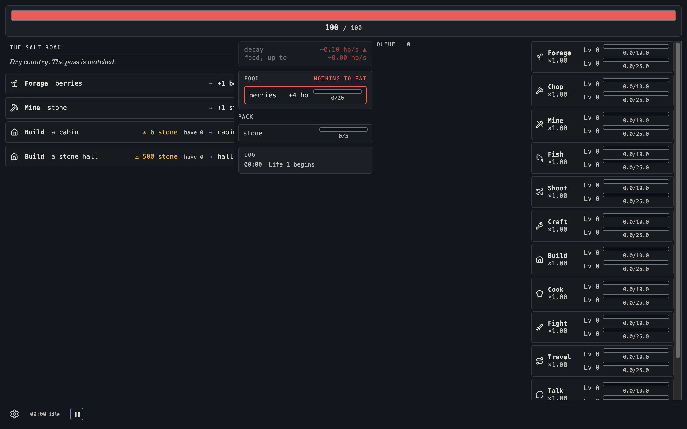
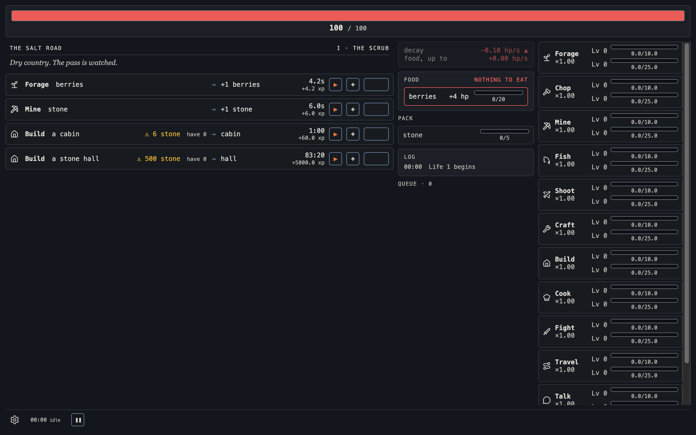

Skills as a right-hand column
Captured from the live game at 1280 x 800 on 2026-09-23, restyled in the page with CSS only. Health is the top row; settings, clock and pause move to a bottom row; the skills band becomes a scrolling column on the right. All twelve of today's skills are shown, so the scroll is visible.

